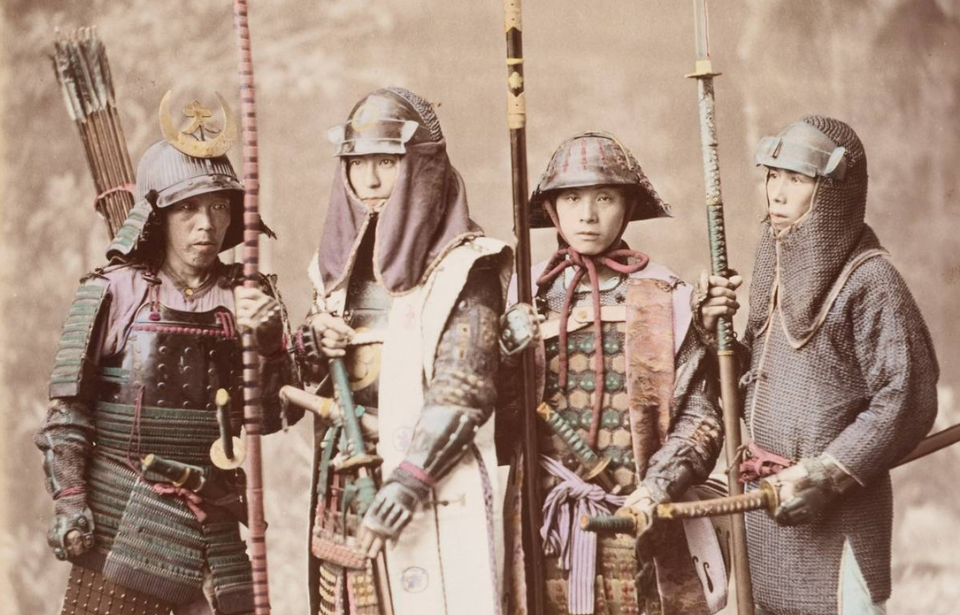

La Storia dei Samurai:
La figura del samurai rappresenta uno dei simboli più duraturi della cultura giapponese. Il termine "samurai” deriva dal verbo *saburau*, che significa "servire”. In origine, intorno all'VIII secolo, designava funzionari armati al servizio della corte imperiale di Kyoto, ma col tempo divenne sinonimo di guerriero professionista appartenente a una classe militare d'élite. Durante il periodo Heian (794-1185), i samurai si affermarono come protettori dei grandi latifondi e iniziarono a esercitare il potere locale.

La loro importanza crebbe fino a culminare nella guerra Genpei (1180-1185), che portò alla vittoria del clan Minamoto e all'istituzione del primo governo militare, lo *shogunato Kamakura*. Da quel momento, il Giappone fu governato da un sistema feudale dove lo shōgun deteneva il potere effettivo, mentre l'imperatore restava una figura simbolica. Tra il XIII e il XVI secolo i samurai dominarono la scena politica e militare. Nel periodo Muromachi (1336-1573) e ancor più durante l'epoca Sengoku (“dei Regni combattenti”), il Giappone fu attraversato da guerre civili continue. I samurai erano i principali protagonisti di queste lotte, al servizio dei *daimyō*, i signori feudali. L'unificazione del paese arrivò solo grazie a Oda Nobunaga, Toyotomi Hideyoshi e infine Tokugawa Ieyasu, che nel 1603 fondò lo shogunato Tokugawa. Con la pace del periodo Edo (1603-1868), la classe samurai perse gradualmente la sua funzione militare: divenne una burocrazia erudita e stipendiata, dedicata anche alle arti, alla poesia e all'amministrazione.
Tuttavia, manteneva privilegi sociali e il diritto esclusivo di portare la spada (*daishō*). L'arrivo delle potenze occidentali e la Restaurazione Meiji (1868) decretarono la fine dello shogunato e dell'ordine feudale: la casta samurai venne abolita, perse i suoi stipendi e il diritto di portare armi. Nonostante la scomparsa come gruppo sociale, il samurai rimase nell'immaginario giapponese come simbolo di onore, disciplina e lealtà. Il suo ideale morale, codificato nel *Bushidō*, divenne parte integrante della cultura nazionale.
Fonti:
Pbs.org, Britannica.com, Japan-guide.com e Wikipedia.org
Torna alla home page →